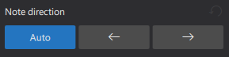

符头
概述
本章讨论 MuseScore 中符头的外观。
符头体系
音乐记谱体系的一个方面是符头体系（notehead scheme）。体系是一组用于决定符头形状含义的规则，其中一些在 MuseScore 中受支持。受支持的体系将符头含义与音符的以下内容相关联：
- 时值：如最广泛使用的体系。
- 音高（使用首调唱名或固定音高唱名）：直接书写在符头上，以及
- 音高（使用形状音符唱名的相对音高）：如“形状音符记谱法”（参见外部链接下的参考资料）。
最广泛使用的体系很可能是大多数音乐家唯一了解的体系。它在 MuseScore 中被称为“普通”，并且是新谱表的默认设置。MuseScore 中提供的九种体系的详情见自定义谱表类型：符头体系。
理解相对音高记谱法（形状音符唱名、形状音符记谱法）可以加深读者对本章的理解。大多数时候，一种符头形状传达一个特定含义，而该含义只与一种符头形状相关联。形状音符唱名就像是首调唱名的一个变体，属于例外情况。例如，在一种“形状音符记谱法”中，必须用三角形来记写相对音高的“C4”，但三角形也只会被读作相对音高的“C”或“F”，而且三角形必须唱“Fa”或由现场歌手商定的某个音节。与之松散相关的形状音符唱名比“普通”设置能更好地记写音程感知。
符头形状

如上所示，菱形符头可用于吉他、小提琴等乐器的泛音；斜线符头用于吉他扫弦等。十字形符头也称为十字符头、幽灵音符或哑音。
MuseScore 中符头形状的最终显示由三个因素决定：符头类型因素、音高因素和时值因素（或音符值、节奏）。
音高因素
根据体系的不同，音符音高可能会影响符头形状，但这种情况只会发生在未使用覆盖性符头类型属性的音符上。参见“符头类型因素”一节。“普通”符头体系不使用音高来决定符头形状。
时值因素
时值因素由音符的时值决定。要编辑时值，请参阅输入音符和休止符和编辑音符和休止符章节。对于单个音符，也可以在不改变实际时值和播放的情况下，视觉上覆盖其显示。
符头类型因素
符头类型因素可用的选项取决于谱表类型：
- 在标准谱表（类型 1a、类型 1b）上，有三个层级：
1. 层级 1：谱表的符头体系：默认为“普通”。
2. 层级 2：某个音符的符头体系（在 Musescore 4.1.1 中选项名为“符头系统”）：
- 默认选项“自动”表示“忽略此层级”。
- 其他选项：用于此音符的体系，覆盖层级 1。 3. 层级 3：某个音符的符头类型属性。当且仅当层级 1 和层级 2 得出的体系为“普通”时，才影响符头形状。
- 吉他谱（TAB）（类型 2）不使用音符。要将选中的品位数字变为十字符头，请在符头面板中单击十字项。要用括号（圆括号、哑音或幽灵音符）括住选中的品位数字，请使用 Shift+X。符头面板中只有前两项对吉他谱（TAB）有效。
- 在打击乐谱表（类型 3）上，乐器（如军鼓或踩镲，而非“鼓组”这种 MuseScore 乐器）决定符头类型因素。参见输入和编辑打击乐记谱：符头形状章节。
符头体系用于决定符头形状，除非被单个音符的符头类型属性覆盖。当符头体系未被覆盖时，根据体系的不同，音符音高可能影响符头形状。“普通”符头体系不使用音高来决定符头形状。当音符使用覆盖性符头类型属性时，音高信息完全不影响符头形状。
更改符头形状
符头类型因素
- （仅对标准谱表有效）要更改单个谱表的层级 1 符头体系，影响所有音符： 1. 右键单击所需谱表上空白的部分，并选择谱表/分谱属性。 2. 单击高级样式属性按钮（打开编辑谱表类型窗口）。 3. 在符头体系下拉菜单中选择一个选项。
- （仅对标准谱表有效）要更改音符的层级 2 符头体系： 1. 在乐谱上选中音符。 2. 在属性面板中，打开音符：符头选项卡。 3. 从符头系统下拉菜单中选择一个选项（您可能需要单击面板底部的“显示更多”才能看到它）：默认的“自动”表示“忽略此层级”。
- （仅对标准谱表有效）要更改层级 3 符头类型属性：
1. 在乐谱上选中音符。
2. 使用以下任一方法：
- 在属性面板中，打开音符：符头选项卡，选择一个符头类型，或
- 单击符头面板中的某项，或将其拖动到乐谱中的符头上。
- 要将选中的品位数字变为十字符头，请在符头面板中单击十字项。要用括号（圆括号、哑音或幽灵音符）括住选中的品位数字，请使用 Shift+X。
- 要更改打击乐谱表上的符头，请参阅输入和编辑打击乐记谱：符头形状章节。
时值因素
- 要更改音符时值，请参阅输入音符和休止符和编辑音符和休止符。
- 要在不改变实际时值的情况下更改显示时值，使播放不受影响： 1. 在乐谱上选中音符。 2. 在属性面板中，打开音符：符头选项卡。 3. 从覆盖视觉时值中选择所需选项（您可能需要单击面板底部的“显示更多”才能看到它）：默认的“自动”表示“不覆盖”。
向音符添加音高信息
有六种方法可以更改“音高”。
大多数时候，音符的音高只影响其在谱表上的位置（垂直位置），要更改它：
- 更改音符音高，参见输入音符和休止符和编辑音符和休止符。
- 在不改变记谱的情况下修改乐谱上音符的播放音高：在属性面板中，单击常规：播放，编辑音分微调（Tuning (cents)）。这对于 Musescore 3 手册的调音系统、微分音记谱系统与播放中所解释的原因很有用。在 Musescore 4.1.1 上，此功能（尚）不适用于使用 Muse sounds 的乐器。
吉他谱（TAB）、打击乐谱表以及某些符头体系（参见概述）使用符头形状来传达音高信息：
- 符头面板中的括号（圆括号、哑音或幽灵音符）项可以添加到音符或变音记号上。
- 要将选中的品位数字变为十字符头，请在符头面板中单击十字项。要用括号（圆括号、哑音或幽灵音符）括住选中的品位数字，请使用 Shift+X。
- 要使用自定义符头形状进行视觉音高表示：
1. 根据需要为谱表更改层级 1 设置。
2. 在选中的音符上使用层级 2 覆盖设置：
- 在乐谱上选中音符。
- 在属性面板中，打开音符：符头选项卡。
- 从符头系统下拉菜单中选择“普通”（您可能需要单击面板底部的“显示更多”才能看到它）。
- 指定层级 3 符头类型属性。使用以下任一方法： * 在属性面板中，打开音符：符头选项卡，选择一个符头类型，或 * 单击符头面板中的某项，或将其拖动到乐谱中的符头上。
- 与同一谱表上的其他音符不同，这些音符将始终使用此项，而不管用户今后对音高的任何更改。
- 根据需要更改时值因素。
- 要放松音符垂直位置与音高之间的关系，使谱表上的所有音符产生所需的播放效果，请利用“移调乐器”功能。
更改符头方向
要将符头水平移动到符干的另一侧，请使用以下任一方法：
- 按 Shift+X，或
- 在属性面板中，打开音符：符头选项卡，选择一个符头方向（您可能需要单击面板底部的“显示更多”才能看到它）。\

（注意：请将此命令与 X 对比，后者会将符干和符杠在水平和垂直方向移动到符头的另一侧）
符头属性

在乐谱中选中至少一个音符时，可以在属性面板的音符部分下符头选项卡中修改符头属性，如下所示：
- 符头括号：为单个符头或多个选中的符头添加或移除括号。当选中的是和弦时，会在整个和弦上绘制一组括号。您可以通过选中带括号和弦中的单个音符并按下普通符头按钮，将括号拆分为多组。左右括号的可见性和偏移等属性可以分别设置。
- 符头类型：参见概述和更改符头形状。
- 隐藏符头：使符头不可见，参见属性：可见性。
- 小符头
- 附点位置：为附点提供另一种垂直偏移。
- 显示更多 / 显示更少按钮
- 符头系统：层级 2 符头体系，参见概述。默认的“自动”表示“忽略此层级”。
- 覆盖视觉时值：更改时值因素，参见概述。“自动”表示“不覆盖”。
- 符头方向：参见更改符头方向（上文）。
- 符头偏移：仅更改符头的偏移（要更改整个音符的偏移，请改用属性：外观中的“偏移”）。
符头样式与字体
在 格式→样式→乐谱 中，符头有 8 种字体选项（与 MuseScore 3 相比新增了两个选项）。符头不使用样式配置文件（模板和样式）。\ 符头面板以 Bravura 字体显示。
在声部之间共享符头
当不同声部中的两个音符落在同一拍上时，它们既可以共享一个符头，也可以错开排列以显示两个符头。这由 MuseScore 根据某些规则（见下文）自动完成。
要强制不同声部中两个错开的符头共享一个符头，请使用以下任一方法：
- 将时值较小的符头设为不可见。这适用于大多数情况。
- 选中时值较小的符头，在属性工具栏的音符部分中，将“符头类型（仅视觉）”更改为时值较大音符的符头类型。
自动共享或错开符头的规则：
- 符干方向相同的音符不共享符头。
- 附点音符不与无附点音符共享符头。
- 黑色符头音符不与白色符头音符共享符头。
- 全音符从不共享符头。
移除吉他谱（TAB）中的重复品位数字
如果您使用的是成对的标准谱表和吉他谱（TAB）谱表，会遇到标准谱表中共享符头在吉他谱中生成两个品位数字的情况。此时只需通过将其中一个品位数字设为不可见来隐藏它。